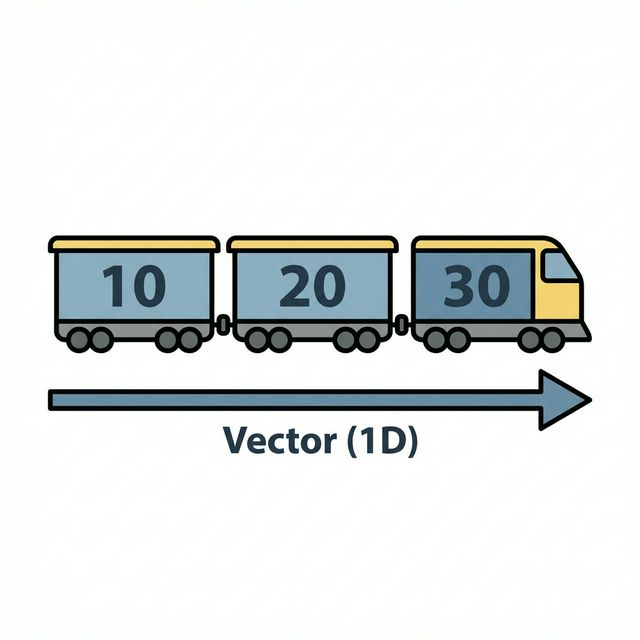
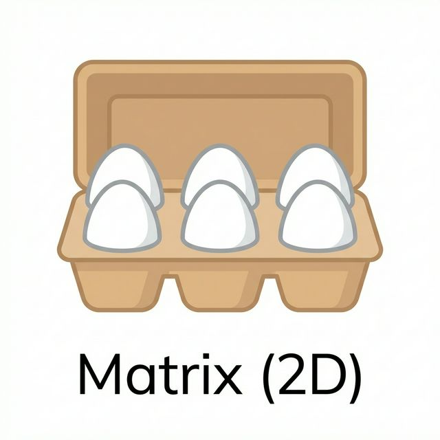
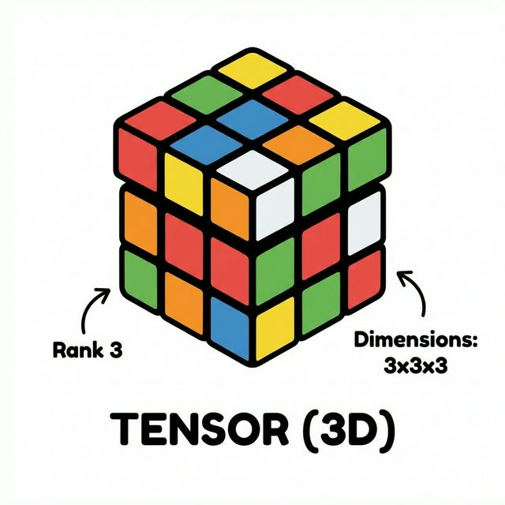

3주차 2강: 벡터와 행렬 (Vector & Matrix)
학습목표: 데이터 분석의 기본 단위인 스칼라, 벡터, 행렬, 텐서의 개념을 명확히 이해하고, 이를 시각적인 비유를 통해 쉽게 기억합니다.
3.2.1. 데이터의 형태 (The Shape of Data)
데이터 분석에서는 데이터를 모양에 따라 부르는 특별한 이름이 있습니다. 어렵게 생각하지 마세요! 우리 주변의 사물로 쉽게 이해할 수 있습니다.
3.2.1.1. 스칼라 (Scalar, 0D)
방향이 없는 단 하나의 숫자입니다.
- 비유: 점 하나 (.), 동전 한 닢, 내 통장 잔고(숫자 하나)
- 예시:
HP = 100,나이 = 25,점수 = 90
3.2.1.2. 벡터 (Vector, 1D)
숫자들이 한 줄로 길게 늘어선 것입니다. (1차원 배열) 하나의 행(Row) 또는 하나의 열(Column)로 구성됩니다.

- 비유: 기차 (Train) 🚂
- 기차는 여러 칸이 일렬로 연결되어 있습니다.
- 첫 번째 칸, 두 번째 칸처럼 순서(Index)가 있습니다.
- 예시:
[국어점수, 수학점수, 영어점수],[1월 매출, 2월 매출, 3월 매출] - 특징: 같은 종류의 데이터가 일렬로 나열된 형태입니다.
3.2.1.3. 행렬 (Matrix, 2D)
숫자들이 사각형 모양으로 행과 열을 맞춰 늘어선 것입니다. (2차원 배열) 가로줄을 행(Row), 세로줄을 열(Column)이라고 합니다.

- 비유: 계란 판 (Egg Carton) 🥚, 판 초콜릿, 엑셀 시트
- 가로 6구, 세로 5구처럼 가로x세로 구조를 가집니다.
- 몇 번째 줄, 몇 번째 칸인지를 나타내는 두 개의 좌표가 필요합니다.
- 예시:
학생 5명의 국/영/수 점수표(5행 3열),이미지 픽셀 데이터(가로x세로 픽셀) - 특징: 표(Table) 형태의 데이터는 대부분 행렬입니다.
3.2.1.4. 텐서 (Tensor, 3D+)
행렬이 여러 장 겹쳐 있는 입체적인 형태입니다. (3차원 이상)

- 비유: 큐브 (Rubik’s Cube) 🧊, 책이 쌓인 모습
- 면(Face), 행(Row), 열(Column)의 세 가지 축(Axis)이 있습니다.
- 예시:
컬러 이미지(가로 x 세로 x RGB 3채널),동영상(시간 x 가로 x 세로) - 특징: 딥러닝(Deep Learning)에서는 이 텐서를 기본 단위로 사용합니다.
3.2.2. 차원 요약 (Dimension Summary)
| 이름 | 차원 (Dimension) | 모양 (Shape) | 비유 | 예시 코드 |
|---|---|---|---|---|
| 스칼라 | 0D | () |
점 | 10 |
| 벡터 | 1D | (3,) |
선 (기차) | [1, 2, 3] |
| 행렬 | 2D | (2, 3) |
면 (계란판) | [[1, 2, 3], [4, 5, 6]] |
| 텐서 | 3D+ | (2, 2, 3) |
입체 (큐브) | [[[1,2],[3,4]], [[5,6],[7,8]]] |
핵심: 데이터의 차원이 늘어날수록, 우리는 더 복잡하고 풍부한 정보를 표현할 수 있습니다. Numpy는 이 모든 차원의 데이터를 자유자재로 다루는 마법의 도구입니다. 🪄
정리 (Summary)
이 강의에서 배운 핵심 내용을 요약해 봅시다.
- [핵심 1]: 스칼라(0D) → 벡터(1D) → 행렬(2D) → 텐서(3D+)로 차원이 확장됩니다.
- [핵심 2]:
ndim은 차원의 수,shape은 배열의 모양(행, 열)을 나타냅니다. - [핵심 3]: 데이터 분석에서는 주로 2차원 행렬(Matrix)을 다룹니다.